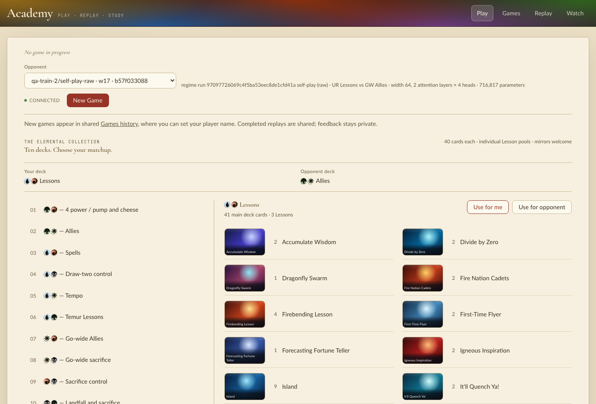
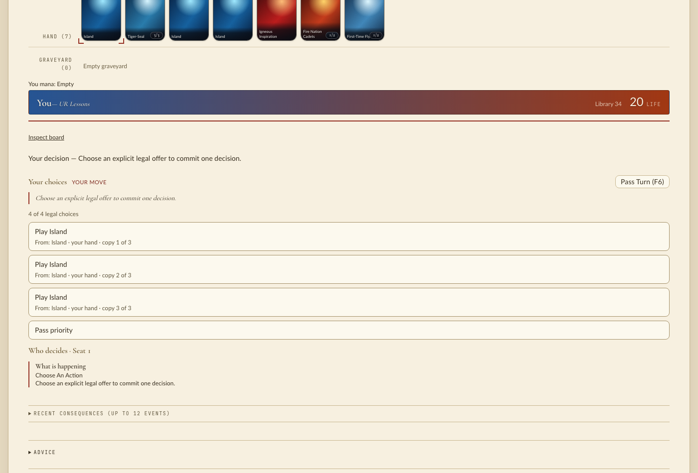
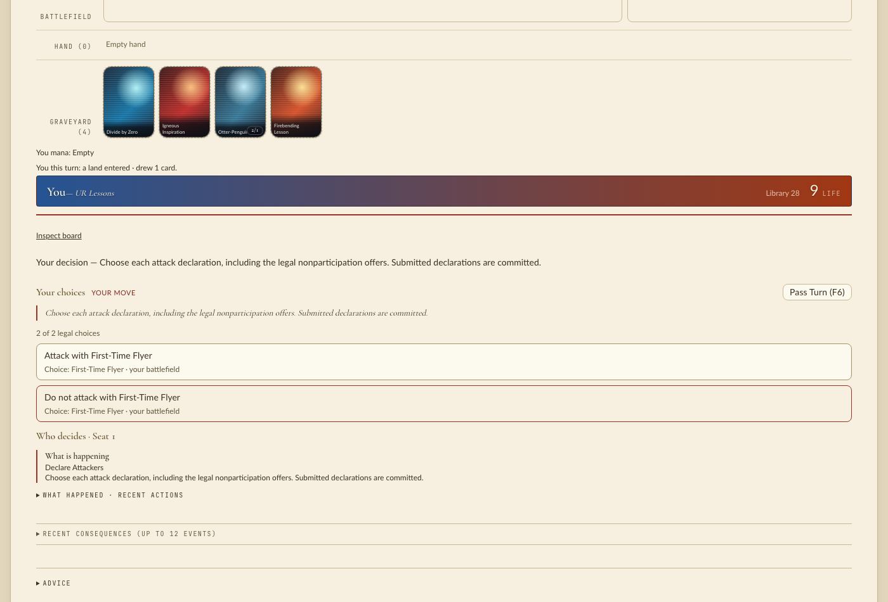

Branch jack/mtg-299-move-policy-input-validation-out-of-forward-and at 686374197, compared with
base main aeb9b8cf0, which was run from a temporary worktree using the same native extension
(no managym/ difference between them). Run on 2026-11-12 on a heavily loaded laptop
(load average 25–62 from other work). No cargo, no full test suite, one workload at a time.
No code changed during QA: nothing in this change's scope broke.
uv run manabot train --device cpu --steps 3 --out .runs/qa-train-1 # completed, 216 optimizer updates uv run manabot train --device mps --steps 2 --out .runs/qa-train-mps # completed, 130 optimizer updates uv run manabot train --device cpu --steps 2 --out .runs/qa-train-2 # branch (base worktree) python -m manabot.cli train --device cpu --steps 2 --out .runs/qa-base-train
| Same command on base and branch | Result |
|---|---|
| regime_digest | equal |
| policy_input_version, content digest, asset manifest hash | equal |
| initial weights, 110 tensors | 0 mismatches |
| weights after 2 collection/update iterations, 110 tensors | 0 mismatches (bitwise) |
Real collection plus PPO learning through the CLI gives bitwise-identical trained weights. This covers the whole PolicyInference.prepare → AdmittedRollout → learner path, not a fixture.
manabot sim path)Branch checkpoint vs random: 6 games, hero 4 / villain 1 / timeout 1. Base-main checkpoint vs branch checkpoint, on the branch: 4 games, 2 / 1 / 1. Rerun with the log checked: 0 "Error getting action" lines. This check matters because the sim loop silently falls back to random actions when a player raises.
The sim had to be driven through run_simulation with the checkpoint's own match
(.runs/qa/sim_ckpt.py). manabot sim --set sim.hero=… with default decks is
refused by the existing world binding ("checkpoint setup differs from the execution match"). That
behavior predates this change.
One game each against random through flat_mc.play_games (spec-driven players, the eval path's builder):
| Player | Result | Wall time (loaded) |
|---|---|---|
| checkpoint | completed | 1.8 s |
| agent_puct (4 sims, 1 world) | completed, won | 45 s |
| policy_search (2 sims) | completed, won | 648 s |
| value_greedy | completed, won | 10 s |
| value_search (2 sims) | completed | 8 s |
policy_search makes the most small-batch forward calls. In an interleaved A/B of 64 two-row real
observations through admit+forward (branch) vs forward (base), single thread, three alternating rounds:
base min 30, 55, 32 ms/call; branch min 32, 36, 28 ms/call. Load noise swamps any difference, so this
is no evidence of a slowdown and no proof of parity. The structural evidence (each check runs once,
moved rather than added) is in scratch/mtg-299.md.
ACADEMY_PLAY_CHECKPOINTS=.runs/qa-train-2/self-play-raw.pt:.runs/qa-base-train/self-play-raw.pt \ ./scripts/play --port 8731 --frontend-port 5931
Headless Chromium picked each checkpoint in the Opponent selector, pressed New Game and played lands,
spells, targets, Learn and attack decisions. Against the branch checkpoint this ran 25 decisions to turn 13;
against the base checkpoint, 12 decisions. The checkpoint villain (academy/villain.py, changed
here) answered every time. Browser console errors: 0. Server log Tracebacks: 0.



Setup note: a checkpoint reached through a symlink under MANABOT_RUNS_DIR is not listed
(Path.rglob does not follow symlinks). Name files in ACADEMY_PLAY_CHECKPOINTS instead.
plain dict to forward: TypeError: policy forward requires an observation from manabot.model.admission.admit_observation admitted: ok (1, 512) admitted for same-config sibling: ok (1, 512) get_action_and_value: ok (1,) no legal action: ValueError: No valid actions available
A/B rejection probe (.runs/qa/corrupt.py): a real mid-game observation, each of 26 inputs
with its first element set to 1e9, −7 or NaN, then admitted and forwarded (branch) or forwarded (base).
All 78 outcomes are identical on base and branch, including exception type and message. Examples:
"invalid action focus reference", "policy received an unadmitted semantic definition",
"policy received an unadmitted card definition", "relations must be finite", NumericalError invalid_action_mask.
manabot.eval.serving_benchmark needs a predeclared plan file. Only --help was run.tla_frontier_facts) were not run
end to end. They are covered by the focused tests listed in scratch/mtg-299.md.manabot.sim.search.flat_mc.play_games builds its MatchConfig without sideboards, so every
checkpoint from the local recipe is refused ("checkpoint setup differs from the execution match").
Reproduced identically on base main. QA added the sideboards in its driver.manabot sim's game loop logs and replaces a raising player's action with a random one, so a
broken model can look like a weak one.